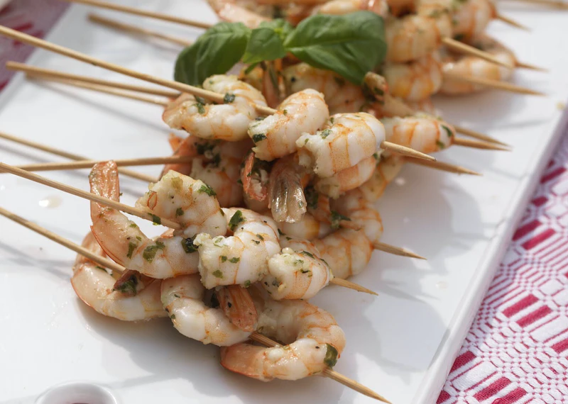

Description
These Easy Grilled Shrimp are brushed with butter, seasoning, and garlic
and cooked on the grill in just minutes. Easy prep and easy clean-up.
Perfect light summer dinner for seafood fans!
Ingredients
- medium shrimp
- unsalted butter
- garlic
- salt and pepper
- Italian seasoning
- paprika
Steps
-
Start by removing the vein and most of the shell. I leave the
tails but you can remove them completely.
- Combine butter with seasoning and garlic.
- Skewer shrimp.
- Brush with butter mixture.
- Grill for 2 to 3 minutes per side, or until pink.
- Serve immediately.